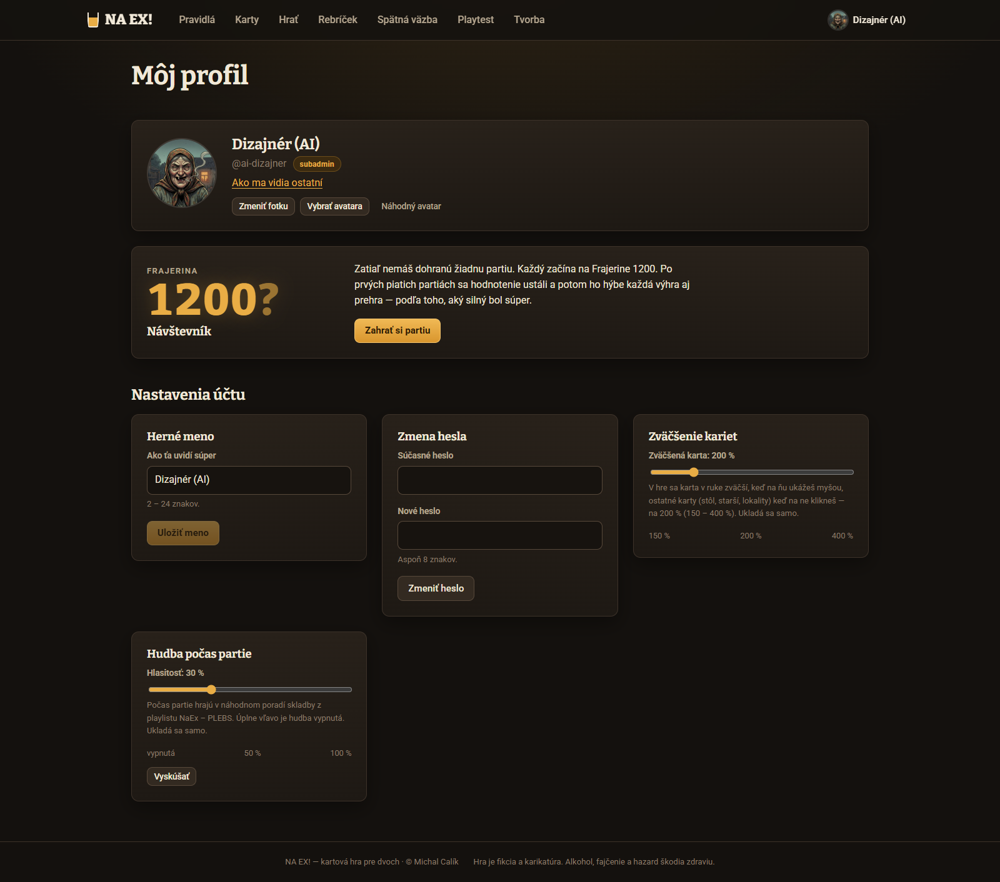
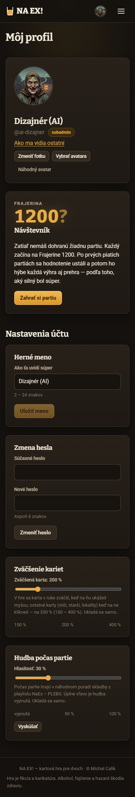
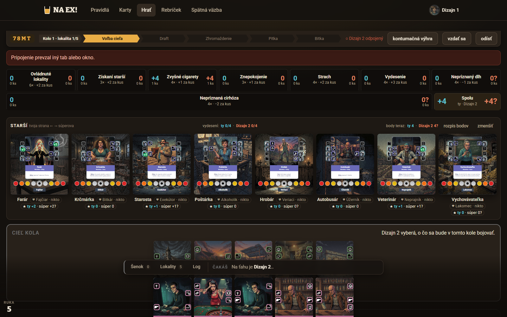
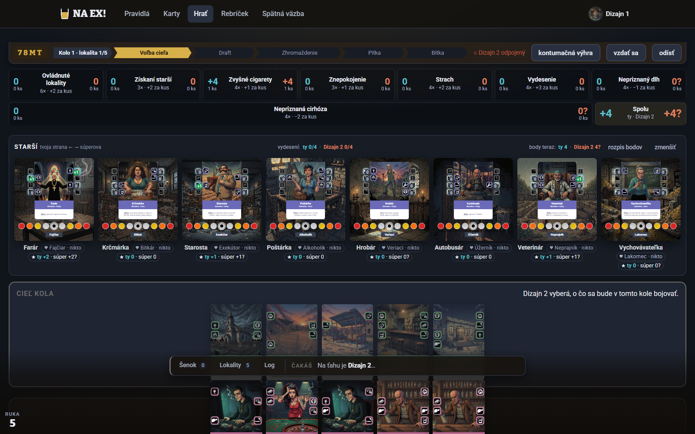
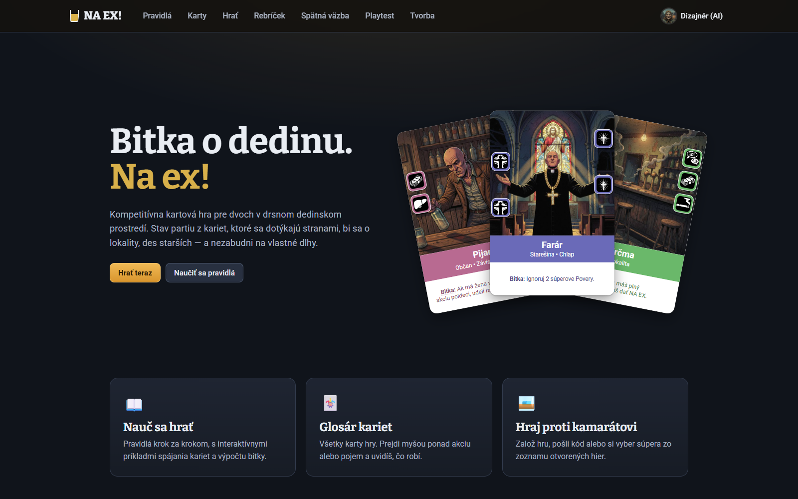

Farebné schémy webu NA EX! — výber v profile
Výber z ~5 farebných schém (inšpirácia Sanzo Wada, A Dictionary of Color Combinations) na
/profil (Profil v apps/web/src/stranky/Ucet.tsx). Schéma platí na celom webe: domov, pravidlá, karty, hra, rebríček, spätná väzba, profil, Tvorba.Hráč chce web, na ktorý sa mu dobre pozerá (večer, dlhá partia) a „svoj“. Hráč so slabším zrakom potrebuje vyšší kontrast. Návštevník bez účtu si číta pravidlá. Admin v Tvorbe posudzuje farby kariet a potrebuje neutrálne pozadie.
1. Nájsť nastavenie. 2. Porovnať schémy a vidieť, ako budú vyzerať (aj na stole). 3. Vybrať, prípadne vrátiť späť. 4. Pri ďalšej návšteve a na inom zariadení mať svoju schému hneď, bez bliknutia.
Verdikt
Áno, je to bežná prax a oplatí sa to, ak sa dodržia dve podmienky. Prvá: schéma mení len „miestnosť“ (pozadie, plochy, okraje, text, akcent). Jazyk stola ostáva rovnaký vo všetkých schémach: farby hráčov (ty modrá, súper oranžová), zelený stôl pri tvojom ťahu, zóny starších a lícne strany kariet. Druhá: schémy sú dáta, ktoré automaticky kontroluje test kontrastu, a ukladajú sa aj v prehliadači, aby web pri načítaní nebliká. Pokus so samotnou výmenou premenných v :root ukázal, že sa prefarbí asi 80 % webu. Zvyšok (hlavička, hlavné tlačidlo, dok na stole) má farby zapísané natvrdo a pred spustením ho treba prepojiť na premenné.
1. Je to bežná prax?
Áno, ale výber sa takmer všade obmedzuje na pár schém, ktoré pripravil dizajnér, a vždy je niektorá predvolená. Vlastné farby si nastavuje len málo aplikácií a prakticky nikdy hry.
| Kde | Čo sa vyberá | Poučenie pre NA EX! |
|---|---|---|
| Operačné systémy (Windows, macOS, Android, iOS) | svetlá/tmavá, farba akcentu, na Androide farby z tapety (Material You), „zvýšiť kontrast“ | Akcent a kontrast sú osobné nastavenie, ktoré prirodzene platí všade. Systémové preferencie (prefers-color-scheme, prefers-contrast) má web rešpektovať ako východisko. |
| GitHub | svetlá, tmavá, stlmená tmavá, vysoký kontrast, varianty pre farbosleposť; zvlášť pre deň a noc | Prístupná schéma (vysoký kontrast) je štandardná súčasť ponuky, nie bonus. |
| Slack, Discord, Telegram | niekoľko pomenovaných tém, náhľad na mieste, okamžitá zmena | Témy majú mená a nálady, nie kódy farieb. Mení sa hneď, bez tlačidla Uložiť. Pozor: v Discorde môže byť téma profilu viditeľná pre ostatných, preto treba povedať, či našu schému vidí aj súper (viď otázky). |
| Lichess, Chess.com | téma šachovnice, sada figúrok, pozadie stránky | Hra mení vzhľad stola, nie význam figúrok. Biela ostáva bielou. U nás to isté: ty a súper, zóny a stav ťahu sú figúrky. |
| Digitálne kartové hry (Hearthstone, MTG Arena) | kozmetika: rubové strany, podložky | Lícne strany kariet a herné farby (mana, typy) sú nedotknuteľné. Pre nás: karty z tvorcu sa neprefarbujú. |
- Komfort: dlhé večerné partie, tmavšia alebo mäkšia schéma.
- Pocit „môj web“ za malú cenu, podobne ako avatar a herné meno.
- Prístupnosť: schéma s vysokým kontrastom pomôže ľuďom so slabším zrakom a hraniu na slnku. Dnešná paleta tri páry WCAG nesplní (audit A4).
- Upratanie tokenov, ktoré si schémy vyžiadajú, zjednoduší aj ďalšie úpravy vzhľadu.
- Význam farieb na stole. Hráči ich používajú pri hraní („ty vždy vľavo/modrá“, „Poštárka v oranžovej“). Ak by ich schéma posunula, hráči by sa mýlili.
- Údržba. Každý nový prvok treba skontrolovať v N schémach. Bez automatického testu kontrastu sa chyby dostanú do produkcie.
- Bliknutie pri načítaní (FOUC): používateľ sa dnes načíta až po vykreslení stránky.
- Snímky a pomoc: návody („klikni na zlaté tlačidlo“) a snímky z playtestov sa medzi ľuďmi líšia.
- Identita: tmavá krčma so zlatými akcentmi je značka, ktorú hodnotitelia chvália. Predvolená schéma preto ostáva Krčma.
- Využitie (odhad): väčšina ľudí predvolenú schému nezmení. Funkcia má byť lacná na údržbu, nie ťažisko webu.
„Konzistentnosť 8 — Farby hráčov, tvar kariet a ikon, tlačidlá jednotné; ‚ty‘ vždy vľavo/modrá.“ — hodnotenie sledovateľa v playtestoch
„Hra vyzerá atmosféricky: tmavá hospodská paleta, ilustrované karty, jasné farby hráčov (modrá/oranžová).“ — hodnotenie sledovateľa
„Poštárka v oranžovej dala súperke +2 cigarety — nevšimol som si, že priazeň je pre ňu výhoda.“ — feedback hráča (zóny majú v reči hráčov mená farieb)
Čo smie schéma meniť a čo nie
| Vrstva | Dnes v kóde | Schéma | Prečo |
|---|---|---|---|
| Pozadie, plochy, okraje, text, tlmený text | styles.css:3-22 (--pozadie … --slaby) | mení | To je „miestnosť“. |
| Akcent (odkazy, hlavné tlačidlo, aktívna fáza, fokus) | --akcent, ale aj natvrdo styles.css:121 | mení, s obmedzením | Akcent nesmie byť zelený, modrozelený ani oranžovočervený, inak splynie s „tvoj ťah“, „ty“ a „súper“. Test to musí overiť. |
| Ty / súper | --ja #5cc0cf, --su #e0805f (hra/hra.css:14-17), Scorecard.tsx:29 | zamknutý odtieň | Hráči si ich pamätajú („modrá/oranžová“). Pre farbosleposť je dvojica modrá a oranžová bezpečná. Odtieň ostáva (modrá okolo 186°, oranžová okolo 16°), svetlosť sa smie doladiť kvôli kontrastu. Pracovná verzia paliet UI dizajnéra to tak robí. |
| Stav ťahu: zelený stôl = hráš ty, sivý = čakáš, jantárový = koniec | hra/hra.css:950-972, dok 1374-1401 | zamknuté | Najdôležitejší stav hry. Pozor na schémy so zelenkastým podkladom (napr. olivová): zelený stôl na nich menej vynikne. |
| Kladné / záporné, platný cieľ | --zelena, --cervena | zamknuté vo význame | Odtieň sa smie doladiť len kvôli kontrastu. Vždy ich sprevádza znamienko +/− alebo text. |
| Zóny starších (červená, oranžová, žltá, sivá) | pravidlá docs/PRAVIDLA.md:770, karta staršieho | zamknuté | Sú to pojmy z pravidiel. |
| Lícne strany kariet, farby typov | karta/karta.css, dáta z tvorcu | zamknuté | Obsah, nie rozhranie. Tlačia sa. |
| Náhľad karty v Tvorbe, tlač | admin/, admin/tlac | neutrálne pozadie | Admin posudzuje farby karty. Tónované okolie skresľuje vnímanie farby (simultánny kontrast). |
2. Toky dnes
Dnes sa schéma vybrať nedá. Nižšie je miesto, kam by výber patril, a pokus, ako sa web prefarbí, keď sa vymenia len premenné v :root.




:root (modrosivá, akcent zlatý). Panely a karty starších sa prefarbili. Hnedé ostali hlavička (styles.css:310), dok „Čakáš“ (hra/hra.css:1387) a prechod pod rukou (hra/hra.css:1279). Farby hráčov a zóny ostali, a tak to má byť.
styles.css:36) a prechod hlavného tlačidla (styles.css:121). Pri jemnej schéme to vyzerá ako „takmer“, pri výraznejšej ako chyba.3. Audit
Závažnosť 0–4 podľa Nielsena (4 = katastrofa, 3 = veľký problém, 2 = menší, 1 = kozmetika). Problémy, ktoré by funkcia vyrobila, ak sa urobí naivne, a dnešné nedostatky, ktoré by zdedila.
| # | Problém | Heuristika | Záv. | Dôkaz | Koho sa týka |
|---|---|---|---|---|---|
| A1 | Schéma môže zmeniť alebo prekryť význam farieb na stole: ty/súper, zelený stôl pri tvojom ťahu, zóny, +/−. Akcent alebo podklad v podobnom odtieni zníži odlíšenie. | Konzistencia, prevencia chýb | 3 | hra/hra.css:14-17, 950-972, 1374-1401; Scorecard.tsx:29; PRAVIDLA.md:770; citáty hráčov vyššie | každý hráč v schéme inej než predvolená, v každom ťahu |
| A2 | Mimo premenných je zapísaných asi 256 hex farieb a 110 rgba() (všetky .css súbory, z toho hra.css 106 a 64). Schéma by web prefarbila len čiastočne. | Konzistencia a estetika | 3 | snímky pokusu vyššie; styles.css:36, 106, 121, 310; hra/hra.css:1279, 1387, 2147, 3401 | všetci v inej než predvolenej schéme, na každej stránke |
| A3 | Bliknutie pri načítaní: nastavenia používateľa prichádzajú z /api/ja až po prvom vykreslení. Každé načítanie by najprv ukázalo Krčmu a potom by sa web prefarbil. | Viditeľnosť stavu, estetika | 3 | lib/ucet.tsx:58-64; index.html nemá skript v <head> | pri každom načítaní stránky |
| A4 | Dnešná paleta má páry pod hranicou WCAG. Nové schémy ich zopakujú, ak sa nekontrolujú: --slaby na --plocha-2 3,96:1 a na --plocha-3 3,51:1 (treba 4,5), --cervena ako text 4,22:1, okraj polí --okraj-svetly 1,99:1 (treba 3:1, WCAG 1.4.11). | Prístupnosť (1.4.3, 1.4.11) | 2 | výpočet kontrastu z styles.css:3-22; --slaby má 36 použití | ľudia so slabším zrakom, telefón na slnku |
| A5 | Nastavenie by bolo ťažko nájsť: v profile je posledné, na telefóne asi 1 700 px od vrchu. Menu účtu odkaz naň nemá. | Rozpoznanie namiesto pamätania, efektívnosť | 2 | snímka mobilu; Layout.tsx:84-108 | každý, kto hľadá vzhľad prvýkrát |
| A6 | Hlášky automatického ukladania sú na vrchu stránky a nemajú role="status". Keď sa uloženie nepodarí, používateľ to pri paneli dole nevidí a čítačka to neprečíta. | Viditeľnosť stavu, pomoc pri chybách | 2 | komponenty.tsx:38-39; Ucet.tsx:278 | týka sa už dnes lupy a hudby, po zmene aj schémy |
| A7 | Návštevník bez účtu sa na /profil nedostane, takže schému s vysokým kontrastom by mal až po registrácii. Bariéra prístupnosti. | Prístupnosť, sloboda | 2 | Ucet.tsx:140 (if (ja === null) return null) | čitatelia pravidiel bez účtu |
| A8 | Svetlá schéma by si vyžiadala vlastné ladenie stola: tmavé priesvitné vrstvy a tiene majú farby natvrdo a color-scheme: dark platí pre celý web (formuláre, posuvníky). | Konzistencia | 2 | styles.css:21; hra/hra.css:1279, 3401 | len ak sa pridá svetlá schéma |
| A9 | Tvorca kariet: farba karty sa na tónovanom pozadí vníma inak, takže admin by mohol karty ladiť podľa svojej schémy. | Zhoda so svetom (tlač) | 2 | apps/web/src/admin/Tvorca.tsx, náhľad karty | admin a subadmin |
| A10 | Nie je jasné, či schému v profile vidia aj ostatní. Pri avatare ich vidia („Ako ma vidia ostatní“), pri téme v Discorde tiež. | Zhoda s očakávaním | 1 | Ucet.tsx, odkaz „Ako ma vidia ostatní“ hneď pri profile | každý pri prvom výbere |
| A11 | Chýba <meta name="theme-color">, takže lišta prehliadača v telefóne nesedí s webom ani dnes, ani po zmene schémy. | Estetika | 1 | apps/web/index.html | mobil |
4. Interaktívny mockup výberu
Skúsi sa tu tok z návrhu N2: klik na schému okamžite prefarbí náhľad (na webe celú stránku), ukáže sa hláška s možnosťou vrátiť a pod tým kontrola kontrastu. Palety sú z pracovnej verzie UI dizajnéra (Krčma, Polnoc na dedine, Vínna pivnica, Tabak, Jedálny lístok), platí ich finálna podoba v UI návrhu. Ostrý kontrast je zástupný návrh (N4). Na páse „stôl“ si všimni, že modrá „ty“, oranžová „súper“ a zóny majú vo všetkých schémach ten istý odtieň.
Herné meno
| Pár | Pomer | WCAG AA |
|---|
Rovnaká tabuľka má byť automatický test nad dátami schém (N1). Do produkcie sa nedostane schéma, ktorá neprejde.
Pripomienky k paletám (pracovná verzia UI, kontrola podľa pravidiel z N1)
- Odtieň ty/súper je všade zachovaný (modrá 185–188°, oranžová 15–18°), mení sa len svetlosť. Presne tak to má byť.
- Slabý text na ploche 3 (
--slabyna--plocha-3) má vo všetkých piatich paletách 4,10 až 4,37:1, čo je pod hranicou 4,5. Stačí--slabyo krok zosvetliť (vo svetlej schéme stmaviť). - Jedálny lístok: „ty“
#127380na--plocha-3má 3,89:1. Skóre a „ty +1“ pod staršími sú na tmavších plochách, treba to stmaviť alebo obmedziť, na ktorých plochách sa „ty“ kreslí. - Tabak: akcent
#d9c46ea zelená#9fc67emajú takmer rovnakú svetlosť (1,11:1) a líšia sa len o 44° odtieňa. Na stole akcent znamená „koniec“ a aktívnu fázu, zelená „tvoj ťah“ a platný cieľ. Odporúčam teplejší, oranžovejší tabakový akcent. K tomu olivový podklad oslabuje zelený stôl, overiť v playtestovej otázke 3. - Vínna pivnica: akcent
#efbb80je od súperovej oranžovej#f0956flen 14° odtieňa (1,31:1, v Krčme 23° a 1,42:1). Akcenty sa na stole kreslia pri súperových číslach v scorecarde, takže je dobré odtiene viac rozostúpiť (akcent žltší). - Jedálny lístok je svetlá schéma, a to mení rozsah práce (A8, N5). Ak pôjde do prvej dávky, treba svetlé varianty prekrytí a tieňov na stole a okraj kariet na svetlom podklade. Inak ju presunúť do druhej dávky.
5. Návrhy
N1 až N3 tvoria jednu dodávku. Bez N1 vyzerá funkcia nedorobene, bez N3 bliká. N4 je súčasť ponuky, N5 je odvážnejší smer na neskôr.
6. Odporúčané poradie
- N1: prepojiť farby na premenné, rozdeliť premenné na schémové a herné, pripraviť test kontrastu. Hneď pritom opraviť A4 v Krčme.
- N2 a N3 spolu: panel v profile, položka v menu, okamžitá zmena s možnosťou vrátiť, skript proti blikaniu, server a zariadenie. Bez N3 nespúšťať, inak bude web blikať.
- N4 ako súčasť prvej ponuky: Krčma, Polnoc na dedine, Vínna pivnica, Tabak (po úprave akcentu) a Ostrý kontrast.
- N5: Jedálny lístok (svetlá) v druhej dávke, keď bude stôl pripravený na svetlý podklad. Ak ju Michal chce hneď, pribudne voľba „Podľa zariadenia“ (tmavé zariadenie → Krčma, svetlé → Jedálny lístok).
Prvý viditeľný krok pre Michala je N2. Bez N1 však bude výsledok vyzerať ako „takmer“ (viď hnedú hlavičku na snímke pokusu), preto N1 ide prvé, aj keď ho používateľ priamo nevidí.
7. Otázky
Na Michala
- Vidia schému aj ostatní? Odporúčam nie: schéma je len pre teba a súper vidí web vo svojej. Ak by mala byť „vizitka“ ako avatar, je to iná funkcia (napr. farba rámu avatara).
- Svetlá schéma áno alebo nie? Ak áno, má byť herný stôl aj vo svetlej schéme tmavý? (N5)
- Počet: 5 schém vrátane Krčmy a k tomu Ostrý kontrast v skupine Prístupnosť, alebo Ostrý kontrast ako jedna z piatich?
- Tvorba: súhlasíš, že náhľad karty v tvorcovi a tlač ostanú na neutrálnom pozadí bez ohľadu na schému?
- Návštevník bez účtu: stačí mu výber v pätičke, alebo má byť schéma len pre prihlásených (a Ostrý kontrast len podľa systému)?
- Neskorší nápad, nie pravidlo hry: schémy ako odmena za Frajerinu alebo dohraté partie? Odporúčam nie, Ostrý kontrast nesmie byť zamknutý nikdy.
Do playtestu
- „Zmeň si vzhľad webu a vráť ho späť.“ Čas, cesta, či niekto hľadal Uložiť.
- Partia v inej schéme než Krčma: „Vedel si vždy, kto je na ťahu a čo je tvoje?“ Sledovať omyly typu „pomýlil som si svoju a súperovu kartu“ v
nezrovnalosti.md. - Pri Tabaku (zelenkastý podklad): všimol si si, keď prišiel tvoj ťah? Porovnať s Krčmou.
- Telefón: našiel tester výber cez menu účtu bez posúvania profilu?
Podklady: snímky a poznámky v playtest/dizajn/farebne-schemy-20261021-1400/. Pokus so zámenou premenných urobil dočasný skript (Chrome cez DevTools, vloženie <style> s premennými), kód webu sa nemenil.